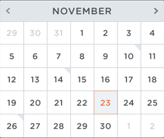

他最懂蝸牛 生科系助理教授黃重期 發表20餘種台灣原生種
國立高雄大學生命科學系助理教授黃重期熱愛蝸牛，研究已超過15載，教學課餘經常往野外跑，努力採集發掘新物種與分類，已陸續發表20餘種並指定為「模式標本」，收藏於國立臺灣博物館、國立自然科學博物館，以利國內其他學者進行生物分類學、環境生態學、遺傳學等後續研究。

這位老外愛去墓仔埔 西語系副教授奧利華 台灣墳墓研究
這位德籍老外愛去「墓仔埔」！國立高雄大學西洋語文學系副教授奧利華（Oliver Streiter）熱衷研究台灣墳墓，自2007年起走遍全台與離島墓園，探訪超過45,000處墳墓，拍攝超過18萬張影像，分析出墓碑堂號、年號、樣式因政權更迭、遷徙移民而變化，間接反映出台灣的族群與文化多樣性特色，相關研究結果發表於中央研究院數位文化中心。

運健休系副教授莊淑姿開設「休閒農場經營管理與實務」
國立高雄大學運動健康與休閒學系副教授莊淑姿這學期開設「休閒農場經營管理與實務」，修課學生不能光在教室吹冷氣上課，部分課程得移往鄰近的「銀髮族市民農園」，實際下田跟在阿公阿嬤身邊學習常見蔬果栽種技巧，也藉機觀察長者需求偏好，設計更吸引他們的樂齡活動企劃，搶攻龐大銀髮商機。許多學生都是第一次拿鋤頭翻土，頂著烈日沒幾下就滿身大汗，直呼種田不簡單。